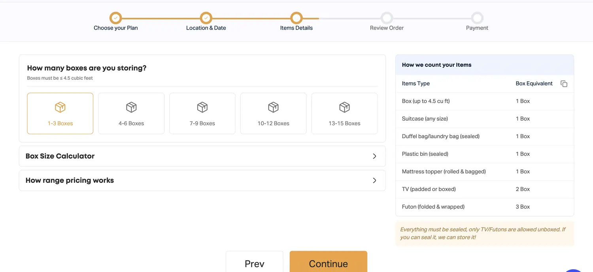

01.1 / Founder · Product & engineering
2024 – PresentA better way to
store the summer.
Boxmate / Student storage marketplace
Moving out should not mean figuring out storage alone. I founded Boxmate to connect UW-Madison students with local hosts and built the business around what students actually needed.
Visit Boxmate
The insight
230+ survey responses and customer interviews surfaced price sensitivity, low freshman awareness and demand for delivery.
The decision
I moved pricing from per-item to bundles to flat tiers, directed the UI/UX, and led a team of about 10 across the storefront, backend and host app.
The result
150+ students served and 95 hosts signed. Summer 2026 revenue reached $15.3K, up 3.5x year over year; 88% of 95 paid orders chose pickup and delivery.